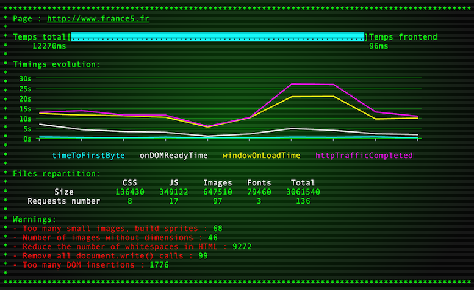

Производительность
4. Производительность
Google page speed
Пример в markup-process
,
PageSpeed Insights
grunt-pagespeed
ngrok
— прокси в интернет
node-ngork
Чем меньше индекс по пунктам, тем лучше
Чем выше общий счет, тем лучше (максимум 100)
Локальные тесты
Пример в markup-process
grunt-devperf
,
grunt-phantomas
Сравнительный отчет
Кол-во запусков
Кастомные предупреждения
Но время скачет :(

В реальных браузрах
Через
Sauce Labs
browser-perf
saucelabs-browsertime
SpeedCurve
на основе
WebPageTest
Презентация «Производительность»
Следующая презентация из серии –
«Машины должны страдать»
Вернуться к содержимому